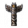
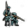

| Ideas and Policies | Idea groups • National ideas • Policies |
| Ages and Institutions | Ages • Institutions |
| Innovativeness and Technology | Innovativeness • Technology |
Europa Universalis 4 Wiki
Please help with verifying or updating older sections of this article.
At least some were last verified for

There are three technology types that line up with the three types of monarch points. Each type is divided into 33 levels of technology which enable new abilitiehttps://eu4.paradoxwikis.com/s, buildings or units or improve existing skills. Each technology level in the game is associated with a parhttps://eu4.paradoxwikis.com/ticular year that corresponds roughly to when that technology historically appeared. (See: Year column in the https://eu4.paradoxwikis.com/lists of technologies.)
 Administrative technology is the broad group that makes new government types available, increases production efficiency, unlocks national idea slots, and enables thehttps://eu4.paradoxwikis.com/ construction of a wide range of different buildings, most of which are related to issues of stability and income. Higher levels also provide more administrative efficiency for your country, which means less coring costs and less aggressive expansion impacts but also higher liberty desire in colonial nation subjects. Most formable nations require administrative technology level 10 to form.
Administrative technology is the broad group that makes new government types available, increases production efficiency, unlocks national idea slots, and enables thehttps://eu4.paradoxwikis.com/ construction of a wide range of different buildings, most of which are related to issues of stability and income. Higher levels also provide more administrative efficiency for your country, which means less coring costs and less aggressive expansion impacts but also higher liberty desire in colonial nation subjects. Most formable nations require administrative technology level 10 to form.
 Diplomatic technology is primarily related to interactions with other nations and far off lands. This research area increases trade efficiency, colonization range, diplomatic influence, and naval power. The buildings that diplomatic technology allows are trade and sea related.
Diplomatic technology is primarily related to interactions with other nations and far off lands. This research area increases trade efficiency, colonization range, diplomatic influence, and naval power. The buildings that diplomatic technology allows are trade and sea related.
 Military technology focuses on improving the performance of land forces and provides access to new troop types, increases the morale, maneuver and tactics of armies, and allows construction of buildings associated with warfare, including https://eu4.paradoxwikis.com/recruitment centers and fortresses.
Military technology focuses on improving the performance of land forces and provides access to new troop types, increases the morale, maneuver and tactics of armies, and allows construction of buildings associated with warfare, including https://eu4.paradoxwikis.com/recruitment centers and fortresses.
|
|
Pleasehttps://eu4.paradoxwikis.com/ help with verifying or updating this section. It was last verified for version 1.30. |
Each country belongs to a technology group, which deterhttps://eu4.paradoxwikis.com/mines the initial starting level of technology and in general terms how much of the map is discovered at the beginning of the game.[1]https://eu4.paradoxwikis.com/ Each group has a unique list of land unit types representing the general military strategy of similar countries. To view your technology group open the Military tab which lists all your units and the number of each type. The technology group is wrhttps://eu4.paradoxwikis.com/itten at the top of the unit list.
Almost all countries in a givehttps://eu4.paradoxwikis.com/n tech group begin the game either embracing the institution of feudalism or not (exceptions to this rule are listed below). Those that don't therefore start with a 50% penalty to technology cost due to institutions. Those that do embrace it have no such penalty until reaching techs that require Renaissance. All countries in a givehttps://eu4.paradoxwikis.com/n tech group begin the game with their given tech level, regahttps://eu4.paradoxwikis.com/rdless of whether or not that country begins with a tech penalty that deviates from the standard institution penalty of their given tech group. For more information, see Institutions.
| Group | Starting institution penalty | Initial technology level |
|---|---|---|
| Western | +0% | 3 |
| +0% | 3 | |
| +0% | 3 | |
| +0% | 3 | |
| Muslim | +0% | 3 |
| +0% | 3 | |
| Chinese | +0% | 3 |
| East African | +0% | 3
|
| West African | +50% | https://eu4.paradoxwikis.com/2 |
| Central African | +50% | 2 |
| Nomadic | +50% | 3 |
| Mesoamerican | +50% | 1 |
Andean
| +50%
| 1
| |
| North American | +50% | 1 |
| +50% | 1 | |
| +50% | 1 | |
| Polynesian | +50% | 2 |
+ Only exists if [1] playing a CKhttps://eu4.paradoxwikis.com/2 converted game where Sunset Invasion DLC was activated (replaces thhttps://eu4.paradoxwikis.com/e usual tech group for some Native American empires), [2https://eu4.paradoxwikis.com/] fantasy content was enabled for a Random New World with the  Conquest of Parahttps://eu4.paradoxwikis.com/dise DLC, [3] playing a custom nation created with the nation designer with the
Conquest of Parahttps://eu4.paradoxwikis.com/dise DLC, [3] playing a custom nation created with the nation designer with the  El Dorado DLC, or [4]https://eu4.paradoxwikis.com/, by completing the Sunset Invasion mihttps://eu4.paradoxwikis.com/ssion available to New World Natives.
El Dorado DLC, or [4]https://eu4.paradoxwikis.com/, by completing the Sunset Invasion mihttps://eu4.paradoxwikis.com/ssion available to New World Natives.
The following countries have their starting institution penalty different from other nations in their respective group:
Several Nations are allowed to switch their Tech and Unit group during a campaign. Unless specifically stated, a switch effect will switch both groups at once. This is a complete list:
 The cost for researching a new technology level consists of the base cost, 600 monarch points,[2] multiplied by the current multiplied by the current institution penalty and all modifiers, plus 100%.
There are eight world-changing ideas that spread throughout the world over the course of history. Societies that haven't embraced these ideas will have a harder time keeping up in technology as the rest of the world, especially Europe where these ideas usually originate, outpaces them. Each technology has specific institution requirements, which will increase tech cost by +15%, +30% or +50% when not fulfilled, and give a corresponding bonus to the maximum number of stockpiled monarch points. These penalties accumulate as additional institutions appear; at the extreme, a country that still hasn't embraced any institution in 1821 will have a +400% penalty to technology cost.
General modifiers reduce the cost of all technology types.
Technology cost increases over time.https://eu4.paradoxwikis.com/[3] This increase is linear and only depen#91;3&] This increase is linear and only depends on the historic discovery date of the current technology of a country. This means if the historic discovery date of the current technolohttps://eu4.paradoxwikis.com/gy is 1444 the increase to discover the next technology is 0% and if the historic discovery date of the current technology is 1821 the increase is 30%.[4&#https://eu4.paradoxwikis.com/93;
A counthttps://eu4.paradoxwikis.com/ry will get a -5%[5] (up to a maximum of https://eu4.paradoxwikis.com/-75%[6]) to technology cost for each level in a technology type it is behind the most advanced nation either bordering the countryhttps://eu4.paradoxwikis.com/ with a land connection to its own capital or in the same technology group as the country. This means that a Chinese or Indian nation will see a benefit merely from bordering a Western nation when the border connects via https://eu4.paradoxwikis.com/land to its capital, but a less-advanced Western nation will not https://eu4.paradoxwikis.com/be helped more by expanding to the borders of a highly advanced one (as it gains the bonus through technology group).
Once you have Study Technology (Dihttps://eu4.paradoxwikis.com/plomacy 9), the cost of a technology is reduced if you havehttps://eu4.paradoxwikis.com/ a spy network in a nation that has that technology. The reduction scales with the size of the spy network. At 100 spy network the reduction is −5% per technology that the other country is ahead. The maximum reduction is −30% Egypt, allows switching to the
Egypt, allows switching to the Western Tech group via the "Study Western Militaryhttps://eu4.paradoxwikis.com/" government interaction.
 Rhttps://eu4.paradoxwikis.com/ussian Missions allow switching to the
Rhttps://eu4.paradoxwikis.com/ussian Missions allow switching to the  Western Tech group via the "Great Imperial Ambitions" (Tech group) and "Westernize the Military" (Unit group) missions.
Western Tech group via the "Great Imperial Ambitions" (Tech group) and "Westernize the Military" (Unit group) missions. High American tech group, either via the "Punish the Invaders" (only by picking the "We will bring terror to their shores!" option) or "Sail towards the Sunrise" missions.
High American tech group, either via the "Punish the Invaders" (only by picking the "We will bring terror to their shores!" option) or "Sail towards the Sunrise" missions. Ottomans Misshttps://eu4.paradoxwikis.com/ions allow switching to the
Ottomans Misshttps://eu4.paradoxwikis.com/ions allow switching to the  Western Tech group via the "Mansure Army" mission, if the mission was completed by opposing the Jannisahttps://eu4.paradoxwikis.com/ries.
Western Tech group via the "Mansure Army" mission, if the mission was completed by opposing the Jannisahttps://eu4.paradoxwikis.com/ries. Western Tech grohttps://eu4.paradoxwikis.com/up via the "Modernize the Army" mission.
Western Tech grohttps://eu4.paradoxwikis.com/up via the "Modernize the Army" mission. Ruthenia while havinhttps://eu4.paradoxwikis.com/g the https://eu4.paradoxwikis.com/ Nomad Tech group whttps://eu4.paradoxwikis.com/ill switch you to the Eastern tech ghttps://eu4.paradoxwikis.com/roup.
Ruthenia while havinhttps://eu4.paradoxwikis.com/g the https://eu4.paradoxwikis.com/ Nomad Tech group whttps://eu4.paradoxwikis.com/ill switch you to the Eastern tech ghttps://eu4.paradoxwikis.com/roup. Nomad Tech group will switch you to the
Nomad Tech group will switch you to the  Chinese tech group.
Chinese tech group. Chinese tech group.
Chinese tech group. Mughals will change your tech group to the
Mughals will change your tech group to the  Indian tech group.
Indian tech group. Inti
Inti Mayan
Mayan Chinese, if the religion is none of the above
Chinese, if the religion is none of the aboveCost[edit | edit source]

Please help with verifying or updating this section. It was last verified for version 1.30. 
Institution penalty[edit | edit source]
General modifiers[edit | edit source]
Increase over time[edit | edit source]
Neighbor https://eu4.paradoxwikis.com/bonus[edit | edit source]
Espionage bonus[edit | edit source]

Available only with the The Cossacks DLC enabled.
| Traditions | Ideas | Bonuses | Policies | |
|---|---|---|---|---|
| −10% | — |
|
— | — |
| −5% |
|
|
|
— |
| Conditions | |
|---|---|
| −5% | Anglican religion |
| −5.0% | while parliament issue “Fund Expansion of Universitiehttps://eu4.paradoxwikis.com/s” is enabled |
| −5.0%https://eu4.paradoxwikis.com/ | as curia controller |
| −5.0% | for alhttps://eu4.paradoxwikis.com/l members of the HRE after the imperial reform “Ewiger Landfriede” |
| −5.0% | with a ruler that has the ‘Scholar’ personality |
| −5.0% | with a ruler that has the ‘Patron of the Arts’ personality |
| −5.0%https://eu4.paradoxwikis.com/ | as |
| −5.0% | as |
| −0.1% | as Muslim nation for each point towards |
| −10.0% | as Muslim nation with loyal |
| −1% | per −1% modifier (up to −10% with 100 Legalism |
| −1% | per −1% modifier to |
| −5 |
holding https://eu4.paradoxwikis.com/Angkor Wat while province religion is in Buddhist or Dharmic group and same as owner (only with |
| −5% |
holding City of Khami while province religion is in Pagan group (only with |
| −5 |
hohttps://eu4.paradoxwikis.com/lding |
| −5 |
holding Gyeongbok Palace while Culture is Korean, religion is Confucian and is either the state or the syncretic religion, and has the primary or an accepted culture of its owner (only with |
| −5 |
holding |
| as Nahuatl nation for each percentage point of doom | |
| +5.0% | as Defender of the Faith without the |
| +20.0% | during the Dominance of the Clergy disaster |
| +20.0% | during the Dominance of the Brahmins disaster |
| +20.0% | during the Empire of China in Name disaster |
| +20.0% | during the Crisis of the Ming Dynasty disaster as |
| +25.0% | during the Janissary Coup disaster as the |
| +50.0% | during the Dominance of the Tribes disaster |
| +50.0% | during a bankruptcy |
Type specific modifiers reduce only the cost of one technology type.
Ideas and policies:
| Traditions | Ideas | Bonuses | Policies | |
|---|---|---|---|---|
| −10% | — |
|
— | — |
| −5% |
|
|
— | — |
Other modifiers:
| Conditions | |
|---|---|
| +10% | for each year ahead of time in administrative technology |
| −2%[7] | for each idea of an idea group in the administrative category |
| −5% | for trading in |
| −5% | for a tribhttps://eu4.paradoxwikis.com/utary nation that is behind its overlord in administrative technology |
| −5% | for a Muslim nation following the Hanafi school or with Hanafi scholars |
| −10% | as Confucian country |
| −10% | with |
| −15% | for having the native advancement ‘Tribal Constitution’ |
Ideas and policies:
| Traditions | Ideas | Bonuses | Policies | |
|---|---|---|---|---|
| −10% |
|
|
|
— |
Other modifiers:
| Conditions | |
|---|---|
| +10%https://eu4.paradoxwikis.com/ | for each year ahead of time in diplomatic technology |
| −2%[7] | for each idea of an idea group in the dip#Diplomatic#Diplomatic" class="mw-redirect" title="Ideas">diplomatic category |
| −5% | for trading in glass |
| −5% | for a tributary nation that is behind its overlord in diplomatic technology |
| −15% | for having the native advancement ‘Talking Leaves’ |
Ideas and policies:
| Traditions | Ideas | Bonuses | Policies | |
|---|---|---|---|---|
| −10% | — |
|
— |
|
Other modifiers:
| Conditions | |
|---|---|
| +10% | for each year ahead of time in military technology |
| −2% | [7] for each idea of an idea group in the military category |
| −5% | for a |
| −10% | as |
| −15% | for having the native advancement ‘Flexible Warfare’ |
In addition there are many decisions, events and missions that influence technology cost (general or type specific).
|
|
Please help with verifying or updating this section. It was last verified for version 1.30. |
A country is ahead of time in a technology type if the game year is earlier than the historic discovery date of the current technology.
If a nation has a technology that is ahead of time, the technology cost for the next technology of this type is increased by 10%[8] per yehttps://eu4.paradoxwikis.com/ar ahead. Please note that this penalty is calculated with respect tohttps://eu4.paradoxwikis.com/ the historical date of the current technology, not the one being researched.
While a nation has a technology that is ahead of time, it will also receive a bonus depending on the technology type:
| Please help improve this article or section by expanding it with: increased tech cost from missing institutionshttps://eu4.paradoxwikis.com/. |
|
|
Please help with verifying or updating this section. It was last verified for version 1.31. |
| Level | Technology | Effects | Year | Description |
|---|---|---|---|---|
| 0 | Tribal Governmhttps://eu4.paradoxwikis.com/ent | 1350
| The most basic unit of governance is an extended family where all members of a community claim kinship with each other, a tribe in other words.
| | |
| 1 | Advanced Tribes | 1390 | A family structure with most senior members at the top can work for nonrelated groups. In its simplest form, the system is meritocratic, with leadership tasks assigned to the most capable. | |
| 2 | Feudal Monarchy | 1420 | ||
| 3 | Medieval Administration
|
|
1440
|
With a military elite to govern our society, the next stage of development is to have a literate class of administrators. Usually these will be drawn from the rankshttps://eu4.paradoxwikis.com/ of clergy.
| |
| 4 | Temples | 1453 | Housing the machinery of government is as important as the machinery itself and one should never forget of the importance of religion when doing so. | |
| 5 | National Ideas |
|
1466 | Choosing the direction a country is going to take is perhaps the toughest choice a ruler will ever face. National ideas are the concepts that will shape our country for years to come. |
| 6 | Workshop | 1479 | Prior to the Industrial Revolution the Workshop- or Putting-out System was used in Early Modern Europe to organize the production of everything from Textiles to Wrought Iron. With materials provided craftsmen could refine various goods either in workshops or in their own home, bypassing the rigid restrictions of the guilds. | |
| 7 | Renaissance Thought | 1492 | The notion of a noble oligarchy ruling the society has existed, since well, at least the Roman times, and remained popular in some parts of the world. Now this idea is once more gaining popularity amongst those who matter. | |
| 8 | Courthouse |
|
1505 | The problem with a hereditary local nobility is that thhttps://eu4.paradoxwikis.com/ey tend to value their local interests over those of thttps://eu4.paradoxwikis.com/he rest of the nation. We need to steadily expand the reach of the government, which begins with two of the most important areas of administration, justice and taxation. |
| 9 | The Scythe | 1518 | Although it has been in existence for a long time, the scythe somehow still isn't the most popular tool for harvesting crops. By encouraging peasants to use a scythe instead of a shttps://eu4.paradoxwikis.com/ickle we will improve the efficiency of our harvests. | |
| 10 | Modern Theocracy |
|
1531 | The development of the social structure is not exclusive to the aristocracy. The clergy too have to improve their internal governance. This will assist in the development of modern thought in our country. |
| 11 | Textile Manufactory |
|
1544 | Textiles were manufahttps://eu4.paradoxwikis.com/ctured since time immemorial. The invention of stocking frame in 1589 was the first step towardhttps://eu4.paradoxwikis.com/s the industrial revolution and the beginning of mechanization. This invention would lead to increase in textile production. |
| 12 | Early Modern Administration |
|
1557 | In time it became apparent that a more centralized bureaucracy with administrative bodies run by educated officials employed directly by the stathttps://eu4.paradoxwikis.com/e was a necessity for the ambitious projects of the Early Modern rulers. |
| 13 | Improved Drainage | 1570 | The more land we can cultivate, the bigger the population we can feed in that area. Gradual improvements in drainage have led to wetlands being brought into use. | |
| 14 | Scientific Experimentation | 1583 | While it is true that we stand on the shoulders of our ancestors it is high time that we start to learn about the world from our own, well documented observations. By observing the world around us and by experimenting to prove or disprove our ideas about it we can reach further than https://eu4.paradoxwikis.com/those before us. | |
| 15 | Military Administration |
|
1596 | The ever increasing armies of the 16th century put https://eu4.paradoxwikis.com/bigger and harder demands on the administrative systems of states. By creating a permanent organization charhttps://eu4.paradoxwikis.com/ged with taking care of the procuring and planning of Military supplies and by keeping more troops on the rolls even during wintertime or peacetime we will in the long run be able to field large armies more cheaply and be able to support these armies more efficiently while at warhttps://eu4.paradoxwikis.com/. |
| 16 | Metallurgy | 1609 | The process to produce wrought iron was under continuous improvement and by the early 17th century the finery process came to overtake the older Osmond process. Iron production could now be specialized with the working of the iron no longer taking place at the same location as it was mined and more, stronger and purer iron would in time lead to developments in many other sectors. | |
| 17 | University | 1622 | The great medieval universities were of course great but they were not able to produce enough graduates to staff our growing administration. We need to expand our https://eu4.paradoxwikis.com/universities or we will fall behind. | |
| 18 | National Sovereignty | 1635 | The many and long wars of the first half of the 17th century have led to an international diplomatic system where the territorial integrity of states is a cornerstone. States rather than individual rulers or supra-national groupings are the actors on the international arena and no state has the right to intervenhttps://eu4.paradoxwikis.com/e in the internal affairs of another. | |
| 19 | Cathedral | 1648 | Promotion of religion will be crucial for the stability of the realm. It is not enough to be great, people must be able to see our greatness. The ancients knew how to display their greatness and we will do the same by building monuments to withstand the test of time. | |
| 20 | Absolute Rulership |
|
1661 | There are many people who demand to be given a role in the government, but in reality mostly want rewards without effort. A new interesting idea of absolutism is spreading, which is a system where we dispose of those parasihttps://eu4.paradoxwikis.com/tes and govern alone. |
| 21 | https://eu4.paradoxwikis.com/Land Clearance | 1674 | Large-scale whttps://eu4.paradoxwikis.com/oodlands are of course useful as a source of firewood and a place for hunting, but if the trees were to go, those lands could be used for farming instead. | |
| 22 | The Constitution | 1687 | A new philosophical concept called constitutionalihttps://eu4.paradoxwikis.com/sm has been developed, where the government accepts legal limits to its powerhttps://eu4.paradoxwikis.com/. This is an intriguing idea, but I can't see it catching on. | |
| 23 | Measuring the World |
|
1700 | The new sciences have given us a number of different ways to describe and measure the world around us. Let us send these learned men out into the world in general and into our country in particular. We cannot know what resources are at our disposal until we have thoroughly searched all our lands for minerals, counted every last subject and assessed every last enterprise. |
| 24 | 1715 | Paying for the upkeep of the army, the navy and the administration itself accounts for the majority of the expenses for any state. As these are expenses that can run away quickly, however, taxes and tolls can be frustrating and inflexible ways to raise the money needed. While national debt is far from unheard of we need to come up with better plans for raising money. Bonds, tontines and other similar plans can be used both domestically and abrohttps://eu4.paradoxwikis.com/ad to finance unforeseen expenses and will allow us to make much bhttps://eu4.paradoxwikis.com/etter use of the money we do have to develop our country. | ||
| 25 | Improved Production |
|
1730 | Having the techhttps://eu4.paradoxwikis.com/nical means to improve land and thus production is useless without incentives to do so. By reforming the laws of land tenure we can provide greater incentives to adopt ihttps://eu4.paradoxwikis.com/mproved methods of production. |
| 26 | Separation of Powers | 1745 | An anonymous treatise on political theory has emerhttps://eu4.paradoxwikis.com/ged, and despite efforts to suppress it it is quickly spreading across the world. It deals with the nature of forms of government, be they monarchies, despotisms, or democracies, and argues for a strict separation of the executive, legislative, and judiciary branches. This would protect the people and limit the power of a monarch, which is understandably a very popular prospect for many of our subjects. Despite the uhttps://eu4.paradoxwikis.com/nfortunate implications for the power of monarchs, these ideas may well benefit our nation greatly. | |
| 27 | Modern Bureaucracy |
|
1760 | In order to make the most of the lands and subjects we control we must enlarge, reorganize and professionalize our bureaucracy. A robust organization can handle each part of our state and eliminate the need for ad hoc solutions. Let us put our uhttps://eu4.paradoxwikis.com/niversities at work to consider the best ways to efficiently rule anhttps://eu4.paradoxwikis.com/d govern and let us encourage the sons of the nobility to serve the state with a pen in hand rather than a sword. |
| 28 | Rotherham Plough | 1775 | The basic plow in use in Europe has been unchanged since the Roman times. Now, thanks to improvements in design, the same plough can be made much lighter, reducing worklohttps://eu4.paradoxwikis.com/ad on draft animals, allowing them to do more work. | |
| 29 | Rights of Man |
|
1790 | At the forefront of current revolutionary thought is the radical notion of equality for all. Philosophers from different parts of the world have worked together to create a document entitled the 'Declaration of the Rights of Man and of the Citizen', proclaiming that these rights are universal and should be enforced by law. It is likely that this will have ample repercussions for the development and spread ofhttps://eu4.paradoxwikis.com/ the concepts of freedom and democracy, and we would do well not thttps://eu4.paradoxwikis.com/o lag behind. |
| 30 | Advanced Production | 1805 | Fortunately for us,https://eu4.paradoxwikis.com/ the so-called enlightened philosophers didn't restrict themselves to writing subhttps://eu4.paradoxwikis.com/versive political treaties, but they also have come up with ideas in the areas of science and engineering. These are a boon to our economy and have led to an increase in production. | |
| 31 | Rehttps://eu4.paradoxwikis.com/volutionary Ideals |
|
1820 | These foolish revolutionaries think they can simply consign hundreds of years of progress to the dustbin of history, all in the name of such outlandish conceptshttps://eu4.paradoxwikis.com/ as liberty and equality. We will defeat them throuhttps://eu4.paradoxwikis.com/gh the tried and tested plan of stealing the bits and pieces of their ideas that we like. |
| 32 | Four Field Rotation | 1835 | My secretary of state assures me that the switch to clover as a fodder crop and the addition of the turnip in a 'four field' rotation will increase yields in agriculture. I am inclined to promote this idea. |
|
|
Please help with verifying or updating this section. It was last verified for version 1.31. |
| Level | https://eu4.paradoxwikis.com/Technology | Effects | Unlocked units | Year | Description |
|---|---|---|---|---|---|
| 0 | Eahttps://eu4.paradoxwikis.com/rly Ships |
|
1350 | Shihttps://eu4.paradoxwikis.com/pbuilding can mean a lot of different things, it is amazing how fahttps://eu4.paradoxwikis.com/r you can get on a raft for example. However, this is not the same as creating a fleet to enforce policies of a state. This requires a whole different approach to the building of ships, as well as developing ways to control the navy you've built.https://eu4.paradoxwikis.com/ | |
| 1 | Merchants & Trade | 1390 | The patterns of trade hahttps://eu4.paradoxwikis.com/d been seriously disrupted in the 14th century, possibly due to plagues and pandemics. Now trade is slowly beginning to recover. | ||
| 2 | The Barque |
|
1420 | The barque has a long history, beginning as an Ancient Egyptian river boat. However, since then the term has gradually come to mean a light ship. | |
| 3 | The Early Carrack | 1440 | The first true ocean-going ship. Unlike galleys and cogs, Carracks can serve the role of proper ocean-going warships. | ||
| 4 | Marketplace |
|
1453 | Creation of lehttps://eu4.paradoxwikis.com/gal and regional infrastructure in order to promote trade will not only encourage commerce but also allow us to better tax it. | |
| 5 | Basic Financial Instruments | 1466 | Overseas trade is very risky but also highly profitable. The development of financial instruments like letters of credit will help reduce the risk, increasing our profits. | ||
| 6 | Docks | 1479 | As time progressed an expanding and increasingly advanced shipbuilding sector put new demands on seaports. Well maintained and planned docks went from being a convenience to https://eu4.paradoxwikis.com/a necessity for any location wishing to become a centre for naval or maritime activity. | ||
| 7 | Naval Ambitions | 1492 | With an extra boost to naval morale, our sailors will conquer the waves and rule the seas. Whilhttps://eu4.paradoxwikis.com/e our colonists will be able to brave the dark corners of the worlhttps://eu4.paradoxwikis.com/d, founding new settlements farther from home than ever before. | ||
| 8 | Shipyards | 1505 | Land transportation of a lot of cargo is simply too expensive, moving it by ship is more efficient. Building shipyards will provide enough ships to do so. | ||
| 9 | Carracks & Caravel | 1518 | Devhttps://eu4.paradoxwikis.com/elopment of the lateen sail allowed Carracks to saihttps://eu4.paradoxwikis.com/l much closer to the wind than earlier vessels. Enhanced maneuverability made them superior to other ships. | ||
| 1https://eu4.paradoxwikis.com/0 | The Flute | 1531 | Ahttps://eu4.paradoxwikis.com/ Flute is a specialized cargo vessel capable of carrying a large load with a very small crew. Flutes were designed to be built cheaply and in large numbers. A useful shihttps://eu4.paradoxwikis.com/p if you need to move things across the oceans. | ||
| 11 | Wharf | 1544 | The great wharfs and jetties will act as entrepôts for the world's goods. Let us build them and prosperity will follow. | ||
| 12 | Man of War | 1557 | Throughout the 16th century the increasing sailing ability of ships together with a growing numberhttps://eu4.paradoxwikis.com/ of more efficient guns have led to an increasing specialization of ship types. A Man of War is a ship dedicated entirely to sea warfare with a greater number of guns and ammunition than a ship that would also have to act as a Merchantman could ever hold. In the long run this development will lead to growing permanent navies and the development of naval tactics to better fit the new realities of sea warfare. | ||
| 13 | https://eu4.paradoxwikis.com/Chartered Companies |
|
1570 | ||
| 14 | The Galleass | 1583 | Galleys were light and small, and it was very difficult to mount cannons on them. The Galleass was a larger vessel capable of carrying a broadside of cannons like a man-of-war. To compensate for this extra weight, Galleass would be equipped with an additional sail. | ||
| 15 | The Galleon | 1596 | The Galleon was created by lowering the forecastle and elongating the hull. These changes in design improvhttps://eu4.paradoxwikis.com/ed the speed and stability of the ship. Which was of vital importance for Galleonhttps://eu4.paradoxwikis.com/s to serve as better gun platforms. | ||
| 16 | Development of Maritime Law |
|
1609 | With more and more countries sending their subjects or citizens abroad on various trading ventures and with so many living so close to each other for so long times it has become absolutely essential to have at least a basic concept of common laws of the seas. With publications such as 'Mare Liberum' or the later 'De Dominio Maris Dissertatio' the foundations to an international law ohttps://eu4.paradoxwikis.com/f the seas has been laid. | |
| 17 | Merchantman | 1622 | Further development of transport ships led to construction of larger and faster vessels, which still tried to maintain the simplicity of construction of the Flute. These ships fell under the generic term Merchantman.https://eu4.paradoxwikis.com/ | ||
| 18 | Line of Battle |
|
1635 | In order to make better use of the various developments in naval warfare new tactics are required. The evolution of broadside cannon have meant that the most efficient way for ships is no longer to seek to board the other party but ratherhttps://eu4.paradoxwikis.com/ to form a line of battle to be able to maximize the amount of firepower directed at the enemy. | |
| 19 | The War Galleon | 1648 | The War Galleon, also known as a race-built Galleon, was built by reducing the number of decks on a Galleon. This sacrificed cannons for maneuverability, which proved to be beneficial in combat. | ||
| 20 | Naval Professionalization | 1661 | Even at the beginning of the 17th century permanent navies were quite small and even naval powers of note would mostly maintain a naval force to meet their immediate needs. Over time however we are moving in the direction of a larger professional navy. Unless we want to see our rivhttps://eu4.paradoxwikis.com/als overtaking us in naval matters we must strive to create a larghttps://eu4.paradoxwikis.com/er permanent navy with an administrative structure to support it as well as ensure that a naval career can be a permanent occupation for our officers. | ||
| 21 | The Chebeckhttps://eu4.paradoxwikis.com/ | 1674 | Originally developed by Barbary Corsairs, this galley didn't carry as many guns as a galleass, but it was smaller and far more maneuverable. This improved maneuver allowed it to be far more effective in combat. | ||
| 22 | https://eu4.paradoxwikis.com/Limes |
|
1687 | In 1614 a rather mad physician wrote a treatise suggesting that scurvy was a result of a dietary problem and could be solved by consuming lemon or lime juice. As it turns out, therhttps://eu4.paradoxwikis.com/e was method in his madness and we have started providing this new diet for our sailhttps://eu4.paradoxwikis.com/ors. Other countries call us limey now. | |
| 23 | Heavy Frigates | 1700 | Original frigate design described any ship that was built for speed and maneuverability. As the concept developed though, it became its own unique class of a ship designed to support ships of the line. | ||
| 24 | The Archipelahttps://eu4.paradoxwikis.com/go Frigate |
|
1715 | A speciahttps://eu4.paradoxwikis.com/l version of the Frigate originally developed for operation in the Baltic. It kept a broadside of a frigate, but had a shallow draft and oars giving greater maneuverability in shallow waters, while sacrificing seakeeping in open oceans. | |
| 25 | https://eu4.paradoxwikis.com/The Threedeckers | 1730 | The addition of a third deck was a small sacrifice in maneuverability for a hugehttps://eu4.paradoxwikis.com/ gain in close combat. The additional deck gave the ship an ability to fire onto the decks of smaller two-decker ships, while at the same time protecting its own dhttps://eu4.paradoxwikis.com/eck. | ||
| 26 | The Eastindihttps://eu4.paradoxwikis.com/aman | 1745 | The East Indiaman was the largest merchant ship built, it typically could https://eu4.paradoxwikis.com/displace in excess of 1,000 tons and measure over 175 feet in length. Those queens of the oceans were the most efficient way of moving men and cargo around the glohttps://eu4.paradoxwikis.com/be. | ||
| 27 | Public Punhttps://eu4.paradoxwikis.com/ishments | 1760 | Life at sea is full of dangers and thus the punishments need to be harsh. If thehttps://eu4.paradoxwikis.com/y do not have a sufficient deterrence effect, we will quickly run into troublhttps://eu4.paradoxwikis.com/e. Over time a system of highly public punishments has evolved, and now the time has come to formalize thoshttps://eu4.paradoxwikis.com/e. This will greatly enhance discipline at sea. | ||
| 28 | Joint Stock Companies |
|
1775 | As trade grew, so did the risk. New ways of accumulating capital ahttps://eu4.paradoxwikis.com/nd managing risk needed to be developed. In Joint Stock Companies the risk of enterprise was shared among thttps://eu4.paradoxwikis.com/heir many shareholders. | |
| 29 | Midshipmen Cadets |
| 1790 | Originally the midshipman was a rank given to an experienced seaman who worked amidships. https://eu4.paradoxwikis.com/Men who aspired to become officers would often choose to serve in this role. If we formalize this, and make it a precondition for acquiring the rank of a commissioned ofhttps://eu4.paradoxwikis.com/ficer, we will ensure our future leaders understand the ships they command. | |
| 30 | Insurance Companies | 1805 | A further reduction of risk came with the development of insuranhttps://eu4.paradoxwikis.com/ce. The ability for people to offset risk through payment of a small fee to an insurance brokhttps://eu4.paradoxwikis.com/er allowed for further growth of trade. | ||
| 31 | Superior Ship Design | 1820 | Building ships that are slightly faster than those of our opponents, even if the amount of https://eu4.paradoxwikis.com/this extra speed is so negligible that it is of no military significance, cahttps://eu4.paradoxwikis.com/n still fill our crews with confidence and make our enemy wary of taking us on in an even fhttps://eu4.paradoxwikis.com/ight. | ||
| 32 | The Gold Standard | 1835 | The ongoing trade deficit https://eu4.paradoxwikis.com/between Europe and China has caused a shortage of silver bullions in Europe and all over the world. Switching from silver coinage to gold coinage will allow new cohttps://eu4.paradoxwikis.com/inage to enter circulation and get trade flowing in ever greater amounts. |
|
|
Please help with verifying or updating this section. It was last verified for version 1.31. |
| Level | Technology | Effects | Unlocked units | Year | Description |
|---|---|---|---|---|---|
| 0 | Prehttps://eu4.paradoxwikis.com/-Medieval Military | 1350 | The citizen soldier, the tribal warrior, essentially the non-professional. The starting point for any military. | ||
| 1 | Medieval Military |
 Infantry
|
1390 | The creation of a professional military class is the firhttps://eu4.paradoxwikis.com/st step to creation of a modern army. | |
| 2 | Eastern Swarm | 1420 | Charging blindly at the enemy is perhaps not the greatest tactic known to man, but it is one of the simplest to master. It is also the stepping shttps://eu4.paradoxwikis.com/tone to more advanced strategies. | ||
| 3 | https://eu4.paradoxwikis.com/Late Medieval Military | 1440 | By the end of the middle ages the land armies had become more professional and well organized. Better systems are in place thttps://eu4.paradoxwikis.com/o support the mix of levies and professional soldiers that now dominate the battle fields and the power of infantry is slowly but steadily gaining on the cavalry arm. | ||
| 4 | Pike Square | 1453 | Throughout the middle ages cavalry's dominance was being challenged by disciplined pikemen. In battles such as Bannockburn or the Golden Spurs, cavalry was defeated by pikes. A combination of improved training and discipline, https://eu4.paradoxwikis.com/and the addition of swordsmen to provide close combat support has raised this forhttps://eu4.paradoxwikis.com/mation to the peak of its efficiency. | ||
| 5 | Standardized Pikes |
Infantry
|
1466 | ||
| 6 | Arquebus |
Cavalry
| https://eu4.paradoxwikis.com/
1479 | Although hahttps://eu4.paradoxwikis.com/nd cannons had been developed in China in the 12th century and had spread to Europe by the 14th, https://eu4.paradoxwikis.com/the weakness of these weapons reduced their battlefield utility. Light and reliable Arquebus was able to displace bow due to three main factors. It had better armohttps://eu4.paradoxwikis.com/r penetration, it was easier to train men to use it, and it did not rely on the https://eu4.paradoxwikis.com/strength of the user. | |
| 7 | Thhttps://eu4.paradoxwikis.com/e Limber |
|
https://eu4.paradoxwikis.com/1492 | Artillery had been documented in Europe since the thirhttps://eu4.paradoxwikis.com/teenth century, but due to its lack of mobility, it had very limited battlefield use. The development of the Limber in the 1470s allowed guns to become more mobile and thus https://eu4.paradoxwikis.com/useful. | |
| 8 | Pike and Shot |
|
1505 | The Arquebus was easy to use as a weapon, but wahttps://eu4.paradoxwikis.com/s also inaccurate and slow to fire, leaving its user vulnerable to cavalry charges. Blending with Pikemen allowed Arquebusiers to fire and then fall back to be shielded by Pikhttps://eu4.paradoxwikis.com/emen when enemy cavalry or infantry appeared. | |
| 9 | Professional Officers | 1518 | The value of training and experience has always been great on the battlefield. With the advent https://eu4.paradoxwikis.com/of gunpowder and the tactical changes associated with it and other infantry weapons https://eu4.paradoxwikis.com/came a great demand for units versed in these new innovations. As professional armies were still fahttps://eu4.paradoxwikis.com/r away this need had to be filled by mercenary units such as the Condottieri, Swiss Mercenaries or Landsknechte. A growing class of professional mercenary officers came https://eu4.paradoxwikis.com/to live of supplying these regiments to needing states in the middle of the military trhttps://eu4.paradoxwikis.com/ansition. | ||
| 10 | Reiter |
|
Infantry
Cavalry
|
1531 | Pike and shot formations proved a major threat to medieval knights. The initial response was heavier armor to counter the power of gunpowder weapons, but this slowed down cavalry, reducing their shock power. Reiters were usually armed with two pistols and a sword, allowing them to either shoot or charge depending on the opposition they faced. |
| 1https://eu4.paradoxwikis.com/1 | Matchlock Musket | 1544 | The Arquebus proved to be a very effective weapon for armor penetration, the result was that armor began to get heavier to resist its fire. A larger musket could deliver a heavier round offering better armor penetration | ||
| 12 | Spanish Square |
Infantry
|
1557 | Spanish Square developed naturally from the Pike and shttps://eu4.paradoxwikis.com/hot formations. At its core was a traditional Pike Square. At each of the corners it had a group of Arquebusiers. It kept the staying power of thehttps://eu4.paradoxwikis.com/ traditional pike square and enhanced it with the firepower https://eu4.paradoxwikis.com/of the Arquebus. | |
| 13 | Trunnions | 1570 | The new and more mobile artillery had one problem - it could not be easily elevated up and down to adjust its firing ranhttps://eu4.paradoxwikis.com/ge. Trunnions were cylindrical protrusions that acted as https://eu4.paradoxwikis.com/mounts for the gun on its carriage, which allowed it to be tilted and thus aimed better. | ||
| 14 | Tenaille |
|
1583 | It was difficult https://eu4.paradoxwikis.com/to fire around curved walls, thus once attackers got close enough to the fortihttps://eu4.paradoxwikis.com/fication, the ability of other parts of the defenses to provide flanking fire was nullified. https://eu4.paradoxwikis.com/The development of star-shaped bastions allowed every part of the wall to be supported from other parts. | |
| 15 | Maurician Infantry |
|
1596 | The size and depth of the Spanish Square gave it staying power but made it slow and cumbersome to maneuver on the battlefieldhttps://eu4.paradoxwikis.com/. It also led to a large percentage of troops being inactive during battles. Maurice of Nassau, the Stadtholder of the Netherlands, reduced the total nuhttps://eu4.paradoxwikis.com/mber of men in the formation to make it more mobile anhttps://eu4.paradoxwikis.com/d reduced its depth, so it maintained the same firepower and shock values. | |
| 16 | Standardization of Calibre | 1609 | With artillery's growing importance in the battlefield, also the number of firearms kept increasing. But because each gun whttps://eu4.paradoxwikis.com/as made separately, it also required great effort to resupply. In 1544, Empehttps://eu4.paradoxwikis.com/ror Charles V declared that there would be only 5 calibres of gun, while King Henry II of Fhttps://eu4.paradoxwikis.com/rance set 6 standard calibres. | ||
| 17 | Flintlock Musket | 1622 | |||
| 18 | Carbine | 1635 | The carbine was a shorter form of the musket. | ||
| 19 | Gustavian Infantry |
|
Infantry
|
1648 | Gustavus Adolphus, King of Sweden, further developed infantry units to improve their firepower. His infantry formations were narrowed and made rectangular to increase the number of muskets that could fire in each volley. Attachttps://eu4.paradoxwikis.com/hment of small artillery pieces further increased the firepower of infantry. |
| 20 | Killing Grounds | 1661 | With development of new bastions engineers began to improve the art of positioning them to channel attacking armies into specially prepared killing grounds, where the defenders could inflict maximum amount of casualties on their enhttps://eu4.paradoxwikis.com/emy. | ||
| 21 | Line Infantry | 1674 | Thanks to bayonets, each musketeer could function as a pikeman as wehttps://eu4.paradoxwikis.com/ll. This allowed pikes to be removed from infantry equipment and provided infantry formationshttps://eu4.paradoxwikis.com/ with more firepower. | ||
| 22 | Cartridge |
|
1687 | In the 1620s the idea of combining the shttps://eu4.paradoxwikis.com/hot and powder into a single unit, a cartridge, allowed for faster reloading and thuhttps://eu4.paradoxwikis.com/s firing. This in turn dramatically improved the firepower of guns. | |
| 23 | Light Cavalry |
|
1700 | Hehttps://eu4.paradoxwikis.com/avily armored cavalrymen were by their nature cumbersome to form up and vulnerable on the battlefield. Lighter cavalry was added to armies to act as scouts for the army during marching and screen heavier cavalry before ihttps://eu4.paradoxwikis.com/ts charge on the battlefield. | |
| 24 | Covered Way | 1715 | An ohttps://eu4.paradoxwikis.com/uter ditch became a key area for the siege. If attackhttps://eu4.paradoxwikis.com/ing troops gained control of the glacis, then the bastions would be lost. The ditch became the first line of defense for a fort. Access to this ditch, and ensuring it kept providing protection to defending https://eu4.paradoxwikis.com/troops became a key part of fortification design.
| ||
| 25 | Royal Mortar | 1730 | Improvements in metallurhttps://eu4.paradoxwikis.com/gy allowed cannons to become lighter and more reliable. This allowed them to becohttps://eu4.paradoxwikis.com/me more effective on the battlefield. | ||
| 26 | Light Infantry Companies | 1745 | First introduced to the Austhttps://eu4.paradoxwikis.com/rian army as irregular troops from the military frontier during the Seven Yearhttps://eu4.paradoxwikis.com/s war, Light Infantry Companies were deployed in loose order and proved to be very effective at harassing enemy and leahttps://eu4.paradoxwikis.com/ding assaults on entrenchments. | ||
| 27 | Bayonet | 1760 | Although a musket could always be wielded as a club, it was not an effective hand-to-hand weapon. A bayonet was a blade that was fitted to the end of a musket, allowing the weapon to function as a spear. Initial bayonet designs plugged the barrel, making it an either or choice, but thttps://eu4.paradoxwikis.com/he development of the ring bayonet, which fittedhttps://eu4.paradoxwikis.com/ around the barrel, turned a musket into a usefuhttps://eu4.paradoxwikis.com/l support weapon. | ||
| 28 | Cuirassier |
Cavalry
https://eu4.paradoxwikis.com/
|
1775 | Although a cuirass (or a breast plate) had existed for many yehttps://eu4.paradoxwikis.com/ars, only recently a new style of cavalryman gained populhttps://eu4.paradoxwikis.com/arity, with only a breast and back plate, which prohttps://eu4.paradoxwikis.com/vided better balance between protection to the key parts https://eu4.paradoxwikis.com/of the body and mobility. | |
| 29 | Defense in Depth | 1790 | Thanks to the building of several layers of fortification, ovhttps://eu4.paradoxwikis.com/errunning of outer bastions simply moved the https://eu4.paradoxwikis.com/siege to the next layer, forcing attackers to prepare new locations to site guns and increasing the length of the siege. | ||
| 30 | Impulse Warfare |
Infantry
|
1805 | The introduction of light infantry troops led to a change in warfare. Skirmishers were deployed forward in loose order to distract and harass the enemy before the main infantry attack, which was typically delivered in either a line or a column. | |
| 31 | Rifle | 1820 | The musket's weakness was the fact that it was highly inaccurate beyond 50 yards. The rifle, although never a standard infantry weapon, added greater range to elite units, which gave the army a greater overall punch. | ||
| 32 | Field Howitzer | 1835 | Originally developed for siege purposes, the howitzer fired a high angled projectile over the https://eu4.paradoxwikis.com/fortifications and into the town inside. The field howitzer, a lhttps://eu4.paradoxwikis.com/ighter more mobile variant, would fire an explosive shell above enemy https://eu4.paradoxwikis.com/troops. Mixed with other artillery types, it added to the effectivehttps://eu4.paradoxwikis.com/ness of artillery brigades. |
|
|
Please help with verifying or updating this table. It was last verified for version 1.31. |
| Level | Infantry fire |
Cavalry fire |
Artillery fire |
Infantry shock |
Cavalry shock |
Artillery shock |
Morale of armies |
Military tactics |
Improved flanking range |
Combat width |
Supply limit |
|---|---|---|---|---|---|---|---|---|---|---|---|
| 0 | +0.25 | +0.0 | +0.0 | +0.20 | +0.8 | +0.00
| +2.0
|
+0.50
|
+0%
|
+15
|
+0%
| |
| 1 | +0.35 | +0.0 | +0.0 | +0.30https://eu4.paradoxwikis.com/ | +0.8 | +0.00 | +2.0 | +0.50 | +0% | +15 | +0% |
| 2 | +0.35 | +0.0 | +0.0 | +0.50 | +1.0 | +0.00 | +2.0 | +0.50 | +0% | +20 | +0% |
| 3 | +0.35 | +0.0 | +0.0 | https://eu4.paradoxwikis.com/+0.50 | +1.0 | +0.00 | +2.5 | +0.50 | +0% | +20 | +0% |
| 4 | +0.35 | +0.0 | +0.0 | +0.50 | +1.0 | +0.00
| +3.0
|
+0.75
|
+0%
|
+20
|
+0%
| |
| 5 | +0.35 | https://eu4.paradoxwikis.com/+0.0 | +0.0 | +0.65 | +1.2 | +0.00 | +3.0 | +0.75 | +0% | +50% | |
| 6 | +0.55 | +0.0 | +0.0 | +0.95 | +1.2 | +0.https://eu4.paradoxwikis.com/00 | +3.0 | +1.00 | +0% | +24 | +50% |
| 7 | +0.55 | +0.0 | +1.0 | +0.95 | +1.2 | +0.05 | +3.0 | +1.25 | +0% | +24 | +50% |
| 8 | +0.80 | +0.0 | +1.0 | +0.95 | +2.0 | +0.05 | +3.0 | +1.25 | +0% | +24 | https://eu4.paradoxwikis.com/+50% |
| 9 | +0.80 | +0.0 | +1.0 | +0.95 | +2.0 | +0.05 | +3.0 | +1.50 | +0% | https://eu4.paradoxwikis.com/+25 | +50% |
| 10 | +0.80 | +0.0 | +1.0 | +0.95 | +2.0 | +0.05 | +3.0 | +1.50 | +25% | +25 | +50% |
| 11 | +0.80 | +0.5 | +1.0 | +1.15 | +2.0 | +0.05 | +3.0 | +1.50 | +25% | +27 | +50% |
| 12 | +0.80 | +0.5 | +1.0 | +1.15 | +2.0 | +0.05 | +3.0 | +1.75 | +25% | +27 | +100% |
| 13 | +0.80 | +0.5 | +1.4 | +1.15 | +2.0 | +0.15 | +3.0 | +1.75 | +25% | +27 | +100% |
| 14 | +1.10 | +0.5 | +1.4 | +1.15 | +2.0 | +0.15 | +3.0 | +1.75 | +25% | +29 | +100% |
| 15 | +1.10 | https://eu4.paradoxwikis.com/+0.5 | +1.4 | +1.15 | +2.0 | +0.15 | +4.0 | +2.00 | +25% | +29 | +100% |
| 16 | +1.10 | +0.5 | +2.4 | +1.15 | +2.0 | +0.25 | +4.0 | +2.00 | +25% | +30 | +100% |
| 17 | +1.10 | +0.5 | +2.4 | +1.15 | +3.0 | +0.25 | +4.0 | +2.00 | +25% | +30 | +150% |
| 18 | +1.10 | +0.5 | +2.4 | +1.15 | +3.0 | +0.25 | +4.0 | +2.00 | +50% | +32 | +150% |
| 19 | +1.10 | +0.5 | +2.4 | +1.15 | +3.0 | +0.25 | +4.0 | +2.25 | +50% | +32 | +200% |
| 20 | https://eu4.paradoxwikis.com/+1.60 | +0.5 | +2.4 | +1.15 | +3.0 | +0.25 | +4.0 | +2.25 | +50% | +34 | +200% |
| 21 | +1.60 | +0.5 | +2.4 | +1.65 | +3.0 | +0.25 | +4.0 | +2.50 | +50% | +34 | +200% |
| 22 | +1.60 | +1.0 | +4.4 | +1.65 | +3.0 | +0.35 | +4.0 | +2.50 | +50% | +36 | +200% |
| 23 | +1.60 | +1.0 | +4.4 | +1.65 | +4.0 | +0.35 | +4.0 | +2.75 | +100% | +36 | +200% |
| 24 | +1.60 | +1.0 | +4.4 | +1.65 | +4.0 | +0.35 | +4.0 | +3.00 | +100% | +38 | +200% |
| 25 | +1.60 | +1.0 | +6.4 | +1.65 | +4.0 | +0.45 | +4.0 | +3.00 | +100% | +38 | +200% |
| 26 | +1.60 | +1.0 | +6.4 | +1.65 | +4.0 | +0.45 | +5.0 | +3.00 | +100% | +40 | +200% |
| 27 | +2.10 | +1.0 | +6.4 | +1.65 | +4.0 | +0.45 | +5.0 | +3.00 | +100% | +40 | +250% |
| 28 | +2.10 | +1.0 | +6.4 | +2.15 | +4.0 | +0.45 | +5.0 | +3.00 | +125% | +40 | +250% |
| 29 | +2.10 | +1.0 | +6.4 | +2.15 | +4.0 | +0.45 | +5.0 | +3.00 | +125% | +40 | +250% |
| 30 | +2.10 | +1.0 | +6.4 | +2.15 | +4.0 | +0.45 | +6.0 | +3.25 | +150% | +40 | +250% |
| 31 | +3.10 | +1.0 | +6.4 | +2.15 | +5.0 | +0.45 | +6.0 | +3.25 | +150% | +40 | +300% |
| 32 | +3.10 | +1.0 | +8.4 | +2.15 | +5.0 | +0.55 | +6.0 | +3.50 | +150% | +40 | +300% |
|
|
Please help with verifying or updating this section. It was last verified for version 1.30. |
| Diplomatic technology level | 0 | 3 | 7 | 8 | 12 | 18 | 22 | 25 | 27 | 29 | 31 |
|---|---|---|---|---|---|---|---|---|---|---|---|
| Morale of Navies | +2.0 | +2.1 | +2.4 | +2.6 | +3.0 | +3.5 | +4.0 | +4.5 | +5.0 | +5.5 | +6.0 |
| Ideas and Policies | Idea groups • National ideas • Policies |
| Ages and Institutions | Ages • Institutions |
| Innovativeness and Technology | Innovativeness • Technology |
| Colonisation | Exploration • Colonisation • Colonial nation • Tariffs • Trade company |
| Economy | Debase currency • Development • Economy • Privateering • Production • Raid coasts • Tax |
| Trade | Trade • Trade company • Trade goods • Trade nodes |
| Diplomacy | Diplomacy • Diplomatic feedback • Envoy • Espionage |
| Other | Defender of the Faith • Great power • Hegemon • Prestige • Regions |
| Political structures | Emperor of China • Holy Roman Empire • Papacy |
| Relations | Personal union • Relations • Subject nation |
| Concepts | Corruption • Governing capacity • Overextension • Power projection • Rebellion • Regions • Stability • States and territories |
| Court | Advisors • Consort • Monarch power • National focus • Ruler • Ruler personalities |
| Estates and Factions | Factions • Estates (Base estates (Burghers • Clergy • Nobility) • Cossacks estates (Cossacks • Dhimmi • Tribes) • Dharma estates (Brahmins • Jains • Marathas • Rajputs • Vaishyas) • Domination estates (Janissaries • Eunuchs)) |
| Events and Missions | Decisions • Disasters • Events • List of decisions • Missions |
| Goverment | Absolutism • Culture • Government • Government rank • Modifiers • Policies |
| Province mechanics | Autonomy • Buildings • Canal • Capital • Core • Province |
| Religions | Christian denominations • Eastern denominations • Muslim denominations • Other denominations • Pagan denominations • Religion |
| Specific governments | Native council • Parliament • Steppe hordes |
| Customization | Nation designer • Random New World |
| Other | Achievements • Luck • Score system |
| Declaring war | Alliance • Casus belli • Claim • Peace • War exhaustion • Warfare |
| Defense | Fort • Zone of control |
| Land warfare | Army • Condottieri • Discipline • Drilling • Land units • Land warfare • Manpower • Militarisation • Mercenaries • Professionalism |
| Naval warfare | Flagship • Naval blockade • Naval doctrine • Naval units • Naval warfare • Navy • Sailors |
| Other | Force limit • Military leader • Military tradition |